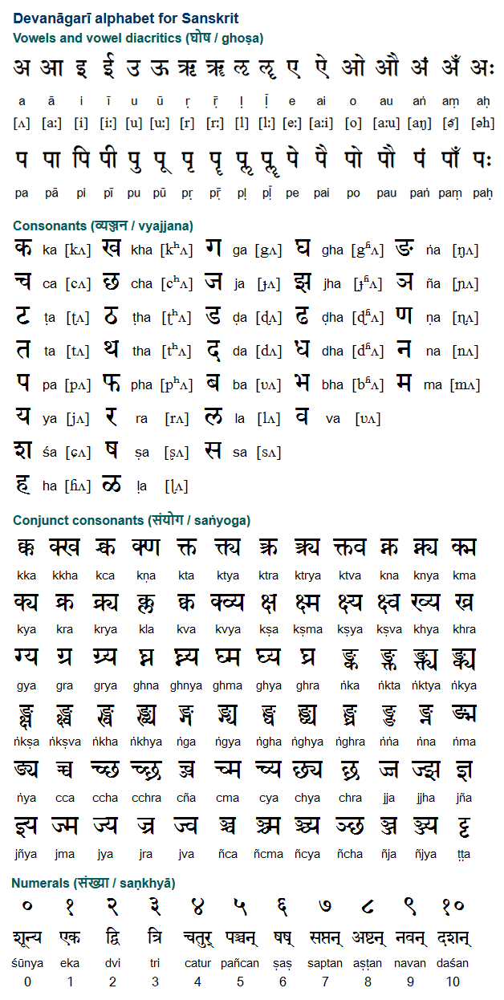

comparing east to west 1
 क (ka) is as if cursive k had this upper bubble (the only stroke runic ᚴ has) inverted as प is to P ख (kha) doesn't deserve our attention, because it's just a ligature of क and र which sounds as a caugh to me, and that's the name of jewish k, and what though the right part of क is not present in that ligature, it looks like h to me, and what if then the left part of क is c or q? But why did we allow प to be reversed yet we look at क not reversed? Because it looks this way, we use psychologists' method of first associations, and we compare similarities to ratio of coincidence with my freedoms of interpretations of strokes (so I consider that right side of क being merely a swash. then this letter is q as if प with swash becomes q. Q is swashed if o is p, but it is not. questions, questions. It's the rawest part of the book, actually, so you can skip this daugh, further is more properly cooked. This part is for those who want to ponder on this subject with me, whether to learn this abugida in this play or to look into way my mind works, because this mindflaw is neither fake nor vane, so it makes me better than Joyce, who could be an institutionalized celebrity, to promote gay theme, which puts him in the list of crowned bests along with plato et socrates, but this will be later. Should I keep this taboo in my beautiful book? It is already in it, I put this in this book which is almost done, so I mostly know what follows, so let it not surprise you. ग (ga) looks like c inverted. or is it г? I didn't care about ups and downs in runic, here I don't care about rights and lefts instead. But if it's a too much of a freedom for considering this part scientific or not I will ask AI of this. but now I do it on human computational powers. The right part of the letter ग looks as г was an angle, as some runic scripts put it, <, but then whoever used that sign to make up syllabary, put an aleph | next to it. Look at signs like आ - it's the longer a, which is अ but what makes me think it is aleph? look at पा it's literally pa with a longer a. this hindi aleph is ा (they don't seem to have a sign of this letter alone, they had to put a dot ring next to it) now look at झ as if snake-like s is followed by that alepha, look at ण and ञ, but then also look at ज, घ, च - what makes me think every vertical line is the ा ? I'm only guessing, if further research shows it is not, or that I'm in a dead end here, I will navigate further from there, now let's go on. Consider it a mnemonic exercise. घ (gha) - if ग is c, then घ is double c - look how I don't care about left and right (not all people can distinguish it, what if ancient writing systems were not stabilized about the direction of its drawing. And they were not. At least boustrophaedon is known not only in greece, but I don't remembere where else did I meet it, probably further in the text you will see it. Egyptians could wright right or left, but though they could position on one image texts going both directions, they didn't go boustrophaedon: if text went one direction, it went that directon all the way (at least I didn't see egyptian boustrophaedon, though I didn't research egyptian thoroughly enough) ङ (ṅa) - I don't know how that n with a dot sounds. But letter reminds me g which in ng sound approaches n, but if it's related I've no idea. But that dot at the right part of it (I involuntarily named a right side of a letter upper side in case of ग. I erased it but now it's again) Then I look at this letter turned by half of pi (fourth of pie) and I see it reminds me ṅ whatever this letter is.27